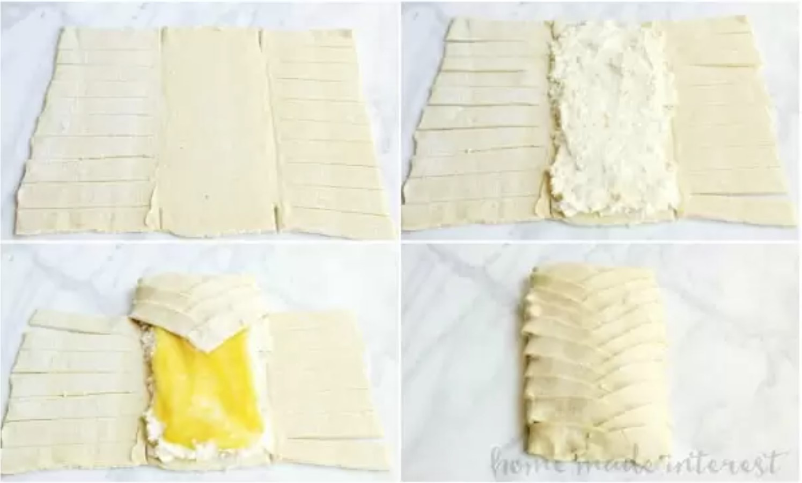

A good cheese danish has always been my favorite breakfast indulgence. That flaky puff pastry crust and the sweetened cream cheese in the middle…it's the ideal way to start the day! This easy cream cheese danish recipe uses premade puff pastry to keep things simple but we have fancied it up by lacing the top into a beautiful braid.
Inside is sweetened cream cheese and delicious lemon curd to the perfect combination of sweet and tart (we have recipe for peach cream cheese danish too!) . Add a little glaze on the top after everything is baked and you end up with a breakfast pastry that is easy enough to make for the family and awesome enough to add to your brunch menu.
Prep time: 20 mins | Cook time: 20 mins | Total time: 20 mins
Contains: milk, wheat, egg
Makes 6 servings
Frozen puff pastry - You'll need 1 sheet of thawed puff pastry.
Cream cheese - Cream cheese adds the perfect tangy flavor to this cheese danish.
Confectioner's sugar - You'll use this powdered sugar to sweeten the cream cheese filling and to make the glaze for the puff pastry.
Vanilla extract - A little vanilla extract helps mellow out the lemon without masking the flavor. Lemon zest - Zesting a lemon is a great way to get a real punch of flavor without the added liquid of using lemon juice. You'll use this in both the filling and the glaze.
Lemon Curd - Yum! I could eat this stuff with a spoon. You can make your own lemon curd or you can find it in the aisle with the jellies and jams at the grocery store.
Egg - This is used to make a simple egg wash to brush over the puff pastry to give it a nice golden brown appearance.
Milk - You'll add this to the glaze to thin it out enough to drizzle it over the cooled danish before serving.
Step 1 - Prepare oven. Preheat oven to 400F.
Step 2 - Make the filling. Mix cream cheese, confectioner's sugar, vanilla extract, and lemon zest together until thoroughly combined.
Step 3 - Fill pastry. Unfold thawed puff pastry sheet and roll it out into a rectangle that is ¼ inch thick.
Cut 1 inch strips down the left and right thirds of the puff pastry, leaving the middle section untouched.
Add cream cheese mixture to the middle of the puff pastry and then spread the lemon curd over it. Fold the end of the puff pastry up and over, then fold the top strip from the left in towards the middle. Fold a strip from the right inwards to overlap the left strip. Continue alternating left and right down the length of the puff pastry.
Make a simple egg wash by mixing the egg and water and brush the egg wash over the puff pastry.
Step 4 - Bake. Place in a 400 F oven to bake for for 20 minutes or until golden brown.
Step 5 - Glaze. While the pastry bakes make the glaze by mixing the confectioner's sugar, milk, vanilla, and lemon zest together in a bowl.
Once the pastry is cooked and has cooled to room temperature drizzle the glaze over and enjoy!
Store remainder at room temperature in saran wrap. Keeps 1-2 days.
https://www.homemadeinterest.com/lemon-cream-cheese-danish/
yummly.com I like how Yummly opens with the question, "What are your favorite cusines? With aesthetic photos of different cuisines. I think it grabs the viewers attention and clearly communicate what the website has to offer. The search bar is clear and centered at the top, and the menu on the left provides more experienced users with exactly what they are looking for.
spendwithpennies.com Spend With Pennies has clear menu options at the top, as well as options for different cuisines front and center. The icons indicate what is available. The images are aesthic and also have options such as "air fryer" and "appetizers".
simplyrecipes.com Simply Recipes has a clean and aesthetic site with an image of an appetizing meal. The menu options at the top make it easy for the user to navigate the site. It has a logo/slogan about freshness and the amount of meals that are on the site.
franshalsmuseum.nl/en Frans Hals Museum has a clear slogan front and center. The "buy tickets" icon in the upper right corner has a clear color contrast making it easy to find. The moving images at the bottom of the homepage draw the viewer's eye down and make you want to keep scrolling on the website and find out more. As you scroll down, the "view all events" button is clear, and the movement of the text is very intriuging and visually appealing. I like the color pallet as well.
seastreak.com Seastreak has a clean and aesthetic homepage with a clear motto and buttons front and center for the most important things. The menu options on the top are very clear. The moving image is a nice touch. As you scroll down on the homepage, the options and descriptions are clear and inviting.
koox.com The animations on Koox are super nice and responsive to your mouse. It says "scroll to discover" to clearly indicate that there is more on the homepage. The color pallet and drawings are really nice. The labels at the top are clear.